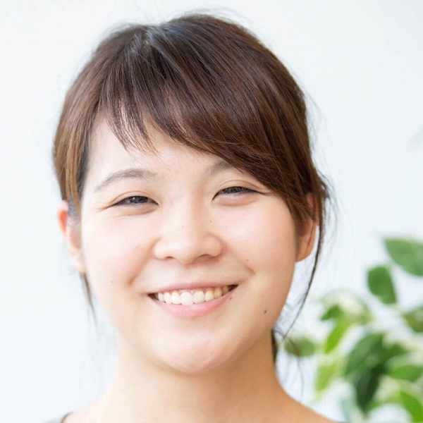
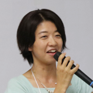

同じ国籍、同じ場所、同じ時間で働ける方が話は早いかもしれません。 開発メンバーと同じく技術知識があった方が分かり合えるかもしれません。 プロダクトマネジメントへの理解や共感が既にある方が楽かもしれません。 でも「様々な違い」があるからこそ見えてくるプロダクトマネジメントがそこにあるのです。 様々な違い - 多様性をプロダクトマネージメントに活かした異なる５つの会社の５つの事例をLT形式でご紹介します。
| 働き方の多様性 | 大阪リモートチームとのプロダクトマネジメント | 尾部絵里子（Sansan） |
| 働き方の多様性 | プロダクトマネージャー兼エンジニアが語るリモートワークが当たり前の組織 | 高木咲希（ソニックガーデン） |
| 価値観の多様性 | スウェーデンと日本 Global Teamにおけるプロダクトマネジメント | 高橋りさ（ソニーモバイル） |
| 組織とキャリアの多様性 | プロダクトマネージャー文化のない組織にプロダクトマネージャー文化をつくる | 石田隼（チャットワーク） |
| 組織とキャリアの多様性 | プロダクトマネジメントをチームに導入するということのリアル | 篠原佳奈子（ビズリーチ） |
登壇者プロフィール
ミュージシャン、人材エージェント向けソフトウェアのカスタマイズ営業を経て、名刺管理サービス「Sansan」「Eight」を展開する Sansan 株式会社に入社。法人向け名刺管理サービスの事業部にてサポート部門のマネジメントを経験後、2017年9月よりプロダクトマネジメントを行なう。
登壇者プロフィール
ソニックガーデン初の女性プログラマ。エンジニアとお客さんの間に入る人がいない 「納品のない受託開発」の進め方に興味を持ちソニックガーデンへ入社。現在は「業務改善」の分野で活躍するエンジニアとして、業務ハックという手法を広める活動を進めている。
登壇者プロフィール
Sony MobileのスマートフォンXperiaに搭載されているアプリ/機能のプロダクトマネージメントを担当。Sonyのガラケーから海外モデルの携帯電話の組み込み開発エンジニアを経て、Sony Ericsson Android初号機Xperia X10よりAndroidアプリ開発に携わる。プライベートは2児の母で、ワーキングマザー歴11年。子育てにScrumを導入しつつ四苦八苦の日々をおくる。登壇者プロフィール
サンフランシスコ州立大学在学中に、現地ベンチャーキャピタルでインターンを経験した後、米国でユーザーテスト事業を開始。日本のゲーム会社やスタートアップのプロダクトローカライゼーションを支援。大学卒業後、ChatWork株式会社に入社し、米国法人の立ち上げから事業展開、現地企業との業務提携等に携わる。2017年2月から東京オフィスに転籍し、プロダクトマネジャーとしてChatWorkのユーザー体験向上とプロダクト開発における文化づくりに従事する。登壇者プロフィール
即戦力人材と企業をつなぐ転職サイト「ビズリーチ」の企画開発に携わる。新卒でSEとして6年勤め、求人広告会社でのディレクターを経て「プロダクトの力でビジネスマンのキャリアサポートをさらに進化させたい」という想いから、ビズリーチに2015年参画。プライベートでは、小４男子の母。